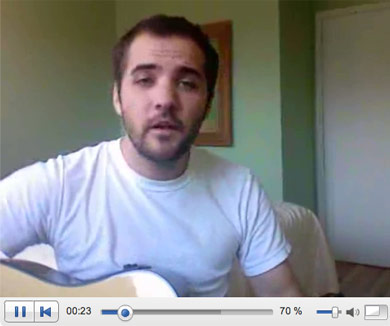

-

Live Mobile Video Broadcasting
Broadcast Live Video from your Mobile Phone to Next2Friends to watch in Real Time or embed in your Blog.
With Next2friends Live Streaming Video, you can broadcast live events from any capable mobile device or webcam to your family and friends wherever they are in the world! They can watch any event in real-time with you, as it happens!
-
Blog
Add a blog to your profile and embed your Live Videos and blog your daily thoughts.
Next2Friends Blogging (N2FBlogger) available both within your profile and from your mobile device. From your profile you can embed any external content or Next2Friends site content. And from your mobile device, you can Live stream and post directly to your blog. Think of it, blog from the street, the game or right from the party!
-
Video Mail
Send and receive Video Mail using the Next2Friends video message center.
Video Messaging allows users to record a video message from any capable mobile device or standard webcam and send it to their friends or contacts. In its most basic form, it is an interactively media-rich email service via the Next2Friends site.
-
Ask
Create a real time Opinion Poll anonymously or for your Friends. You can Ask from your desktop or mobile phone.
Ask-A-Friend is a dynamic new way to get instant feedback from all your friends, or if you choose, the entire Next2Friends community. It works like this: You snap photos to create an instant opinion poll to send to whomever you choose for a vote. Your friends will receive notification via their mobile device or their Next2Friends profile that an opinion poll has been created. They choose their favorites among the pictures and the results are then sent directly back to you. Ask-A-Friend gives you real time results when you need them the most; in the real world!
-
Proximity Tagging
Tag and Meet new people where you live, work and play with Next2Friends proximity tagging for your mobile.
Next2Friends Tag is designed to automate the otherwise tedious task of online person-to-person network building by bridging your online profile and the physical “real world”. Here’s how it works:
You set up a profile detailing all your likes, your dislikes, your quirks and everything that makes you who you are. Then, if you load Next2Friends onto your mobile device and turn on Proximity Services, Next2Friends will look for other users you come into close proximity with that share your likes, dislikes, and yes, even your quirks. Finally, when you sign into your account you’ll receive notification of all the people you passed throughout the day who you have something in common with. And the rest is up to you!
Copyright Next2Friends 2007 | Footer Menu | Privacy Policy